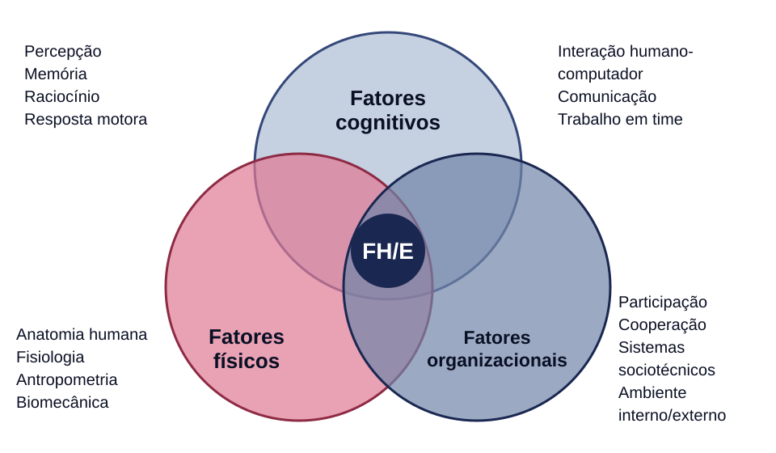
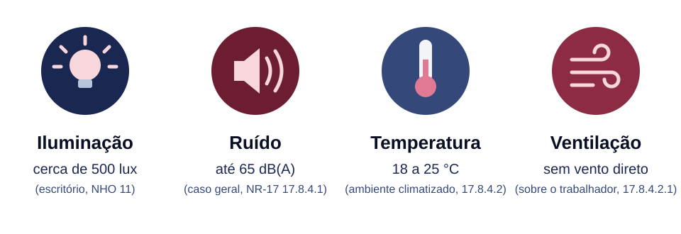
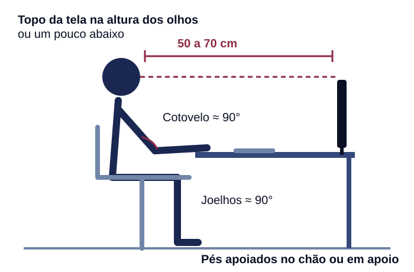
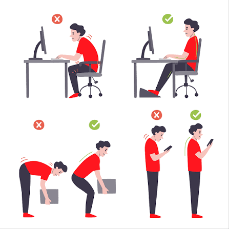
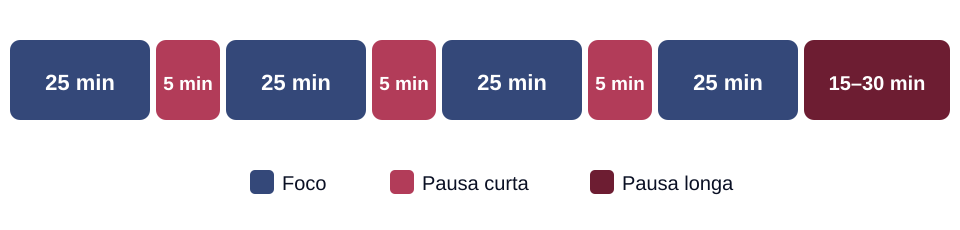

Imagens de exemplo
Clique em uma imagem para ampliar. Cada figura traz a fonte logo abaixo, conforme a ABNT.








Clique em uma imagem para ampliar. Cada figura traz a fonte logo abaixo, conforme a ABNT.




